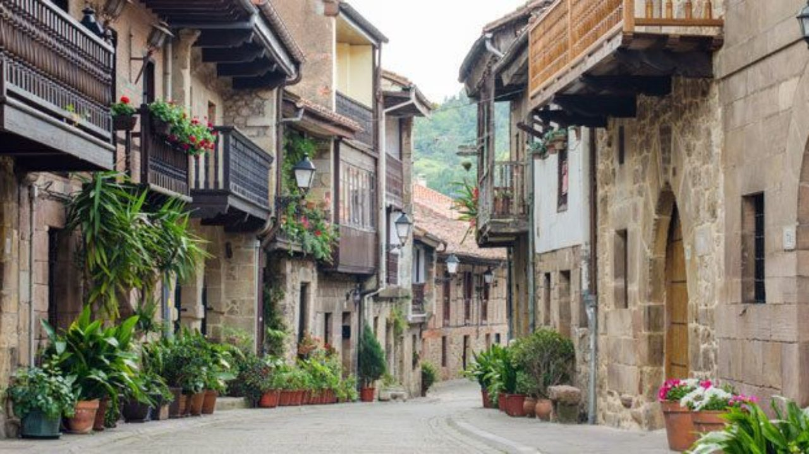

|

|
TORRREÓN DE CARTES:
El Torreón de Cartes es una edificación medieval del siglo XVI, utilizado antiguamente como fortaleza contra los invasores
PARQUE DEL ANSAR: El parque del Ansar es un gran parque que dispone de 4 campos de fútbol, pistas de padel y un gran parque infantil, junto a una gran diversidad de flora
MIJA TOWN: Mija Town es un barrio de lo alto de cartes, algo deshabitado, por no decir que es un pueblo fantasma
SC: SC es el centro de ocio de Cartes, famoso por sus pistas y por estar habitado por demasiados niños
|